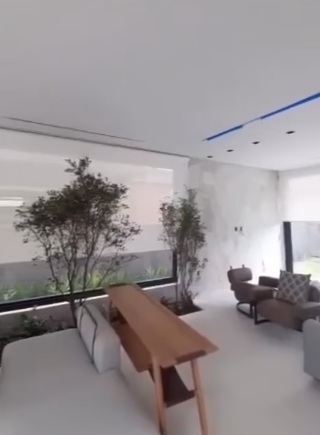
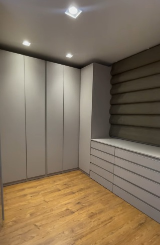
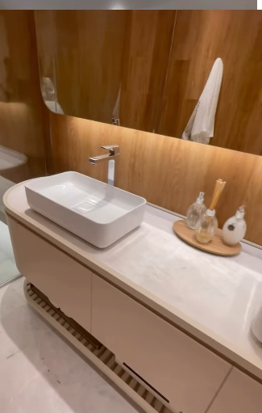
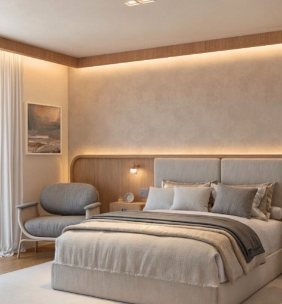

Identidade
Cada projeto nasce a partir da sua historia, gostos e rotina para criar ambientes unicos e pessoais.
Design de interiores com identidade, funcionalidade e acompanhamento proximo do inicio ao fim do projeto. Atendimento em Teutonia, Lajeado e Vale do Taquari/RS.

Cada projeto nasce da escuta e do entendimento profundo de quem vai viver o espaco.
Cada projeto nasce a partir da sua historia, gostos e rotina para criar ambientes unicos e pessoais.
Estetica e praticidade caminham juntas, com solucoes que facilitam o dia a dia sem abrir mao do conforto.
Do briefing a entrega final, voce e acompanhado em cada etapa — da concepcao ao acompanhamento de obra.
Acompanhe projetos, bastidores e novidades no nosso perfil.
Projetos de interiores, bastidores e inspiracao para o seu espaco. Siga e acompanhe as novidades.
📷 InstagramAmbientes criados para clientes no Vale do Taquari.



Conte sobre o seu espaco e receba uma proposta personalizada.
Falar no WhatsApp